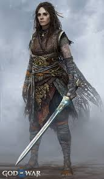

Rol y Atributos: Diosa de la fertilidad y el amor: Freyja está asociada con la sexualidad, el amor romántico y la fertilidad. Es invocada para asegurar cosechas abundantes y matrimonios felices. Guerrera y líder: Freyja también tiene un papel bélico. Comparte con Odín a los guerreros caídos, llevándose la mitad a su propio reino, Fólkvangr, mientras la otra mitad va al Valhalla. Diosa de la magia (Seidr): Freyja es una experta en el Seidr, una forma de magia nórdica que implica profecía y manipulación del destino. Enseñó esta práctica a los dioses Æsir.
Familia: Padres: Njörðr (dios del mar) y una figura desconocida (posiblemente su hermana o Skadi). Hermano gemelo: Freyr, dios de la fertilidad, la paz y la prosperidad. Esposo: Óðr, quien desaparece frecuentemente, lo que lleva a Freyja a llorar lágrimas de oro. Hijas: Hnoss y Gersimi, cuyos nombres significan "joyas" o "tesoros".
Atributos icónicos: Brisingamen: Un collar mágico de gran belleza, asociado con el poder y la fertilidad. Obtuvo este collar tras negociarlo con enanos. Carro tirado por gatos: Freyja viaja en un carro tirado por dos grandes gatos mágicos. Capa de plumas de halcón: Le permite transformarse en un ave y volar.
Reino: Fólkvangr: Su hogar en el más allá, donde recibe a los guerreros caídos dignos de honor. Su palacio, Sessrúmnir, se encuentra allí.
Influencia y veneración: Era adorada como una diosa benévola, accesible y poderosa. Las mujeres la invocaban para protección, amor y fertilidad. Su nombre está relacionado con el viernes (Friday en inglés), que deriva del latín dies Veneris, día de Venus, lo que refleja la conexión entre Freyja y Venus/Afrodita. Freyja en la Cultura Popular
Representación moderna: Freyja aparece en literatura, videojuegos y series como una diosa poderosa e independiente. Ejemplo destacado: en el videojuego God of War, donde desempeña un papel crucial. Simbolismo contemporáneo: Freyja representa el equilibrio entre la fuerza, la belleza y la magia. Es vista como un arquetipo de la feminidad empoderada y la independencia. Influencia en la cultura nórdica: Amuletos y talismanes con referencias a Freyja (como el Brisingamen o su carro de gatos) son populares en la cultura moderna y neopaganismo. Aspectos clave de Freyja Freyja es un símbolo multifacético de amor y pasión, pero también de fuerza y guerra. Su influencia combina las esferas de lo terrenal y lo espiritual, siendo una guía tanto para los vivos como para los muertos. Representa un balance entre la vida cotidiana y los misterios de lo sobrenatural.
